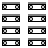
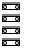
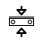
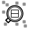

Node connection editor
In the node connection editor , visualize and create the parameter constraints from one function to another function using leader lines. The procedure is inspired by the ‘node programming’ principle (Node based programming). The functions are considered as nodes.
To create a connection, hold down the left mouse button and drag the mouse from one connection point to another. To remove a connection, highlight it at the target point and press the DELETE key.
Show or hide the node connection editor. | |
Update the representation in the node connection editor. |
There are different approaches for gaining an overview:
When the mouse touches the start point, an existing connection is highlighted in color. When the mouse touches a target point, the connection is highlighted in a different color. Hold down CTRL and click on the starting point – the connection is highlighted in color until the representation in the node connection editor is updated. Nodes can be temporarily placed in other positions by dragging them.
  | Disable second script mode. The nodes of a script or subscript are displayed one below the other. Without second script mode, the nodes in longer scripts are arranged in a zigzag in order to save space. In second script mode, a subscript can be displayed next to the main script. This allows connections to be easily dragged from or to a subscript. The Subscript option is also displayed. Select a subscript – provided that subscripts are used. Make the representation of the nodes clear by neatly combining the selection of a subscript or main script in the Subscript option and the Subscript option for |
Restrict the representation to only the connected nodes. | |
 | Display only the current node with incoming connections – enable and disable. |
Display only the current node with its use in other nodes – enable and disable. | |
 | Show only the expanded components within the script tree structure to be processed – enable and disable. |